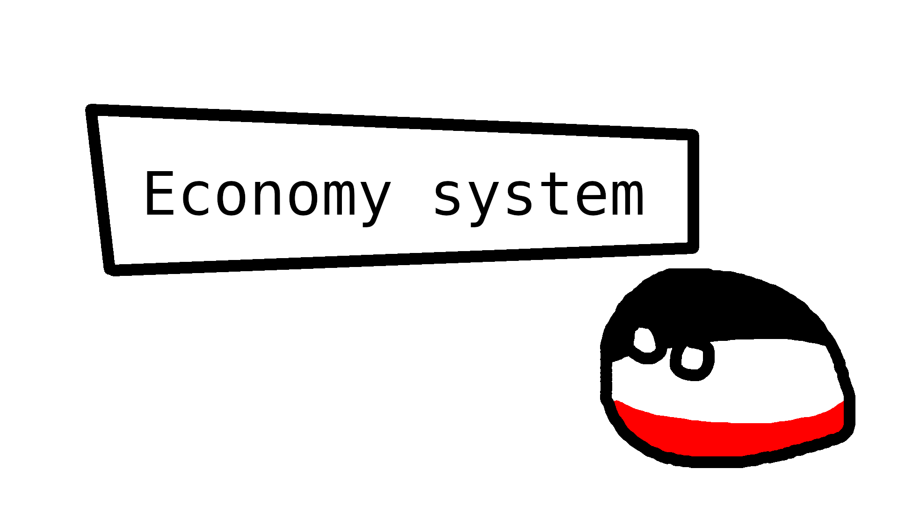
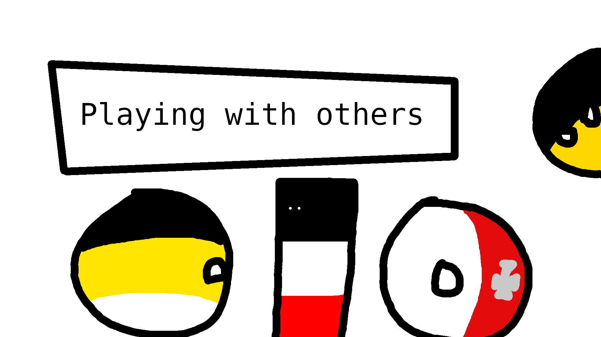
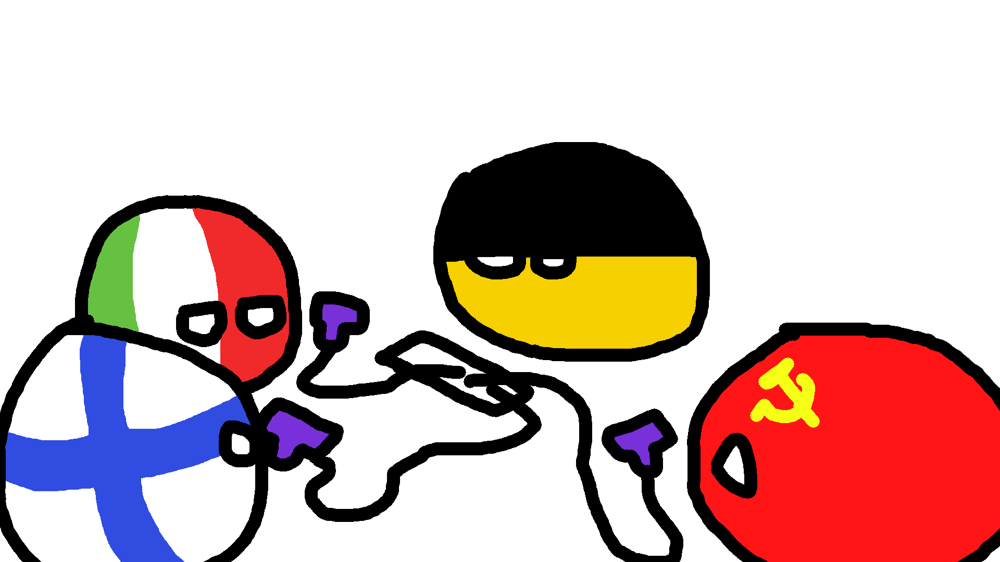

Symphony of Empires
Economy

Figure 1 At first, the economy system may seem daunting, but it isn't
The economy system is not based on any in specific, it is a mix of different ideas that make up a whole interesting mechanic to add more depth in the game.
The economy system is distributed across 48 ticks, each 48 ticks equals one day in-game, so each tick equals to 30 minutes; this helps distributing load when simulating the world and also helps to more accurately represent battles.
In the first economic tick RGOs and industries who have produced products will place "deliver" tickets, and factories that require inputs for producing will place "order" tickets; this is the first step in the simulation.
After that, transport companies will see the global world orders and delivers, they must check that the country allows foreing trade (and that their country does too); domestic trade dosen't accounts for this. And deliver tickets should have enough willing money to cover taxes and transport expenses, same with orders.
Once a industry receives a product, it will start asking for higher quality products; if it does not receive any it will "calm down" and ask for any product available.
Factories with available stockpile of inputs will produce their output products.
Once that is done, it's time to distribute products to POPs; each time a transport company transports a good, the good is "duplicated" and placed onto the province's stockpile. POPs are able to buy from this stockpile; POPs will look at products randomly in order to fullfill their living needs, and if possible, their luxury needs.
Multiplayer

Figure 2 Multiplayer is what gives games a real challenge, since you are playing with actual humans
Multiplayer is very important and it's a key factor for the game growth; it not only gives the player the possibility to compete against others; it also allows new players to experience challenges without the need of coding a very complex AI.
The game is centered on a server-client architecture; to see why this is important let's see the following image along with an example.
Figure 3 Cartoon-ish version of a multiplayer session
In order to keep up with the example we will call Austria (Host/Player 0), Italy (Player 1), USSR (Player 2) and Finland (Player 3) as their respectives.
Let's suppose that 4 friends decide to play Symphony of Empires; on other games all players have to download the same mod in order to play; otherwise their games may desync or they can have issues. This is not the case with Symphony of Empires. Here, the mods are given to the clients when they are connected to the server, meaning that they do not need to worry about mod-compatibility or such. They don't even need to download anything at all!. How awesome is that?
First, Austria convinces Italy to join it's multiplayer game, Italy accepts and fires up their client, connects to Austria and they both are now connected; under the hood, Austria's server sent Italy's client a copy (snapshot) of the entire world, along with relevant information for the client to consume, in a nutshell, Austria sent a mod to Italy without it even knowing it happened.
Now, this is where it gets funky. The network protocol in order to save bandwidth dosen't sends snapshots of the world each tick, instead things are done by actions; those actions are sent and received by both ends. Colonizing a province is an action that the client sends to the server; the server then validates it and sends an ACTION_UPDATE_PROVINCE to all clients.
This is a huge improvment, not only bandwidth is saved, but also CPU usage and memory. Your client dosen't simulates the world; it instead listens to the actions of the server; the only purpouse of the client is to transmit player input to the server and represent the data given by the server.
When the client wants information about a province in specific it sends an ACTION_UPDATE_PROVINCE to the server, the server then responds with ACTION_UPDATE_PROVINCE.
Austria then invites the USSR and Finland to the party. Once the main players are in, Austria starts the world and it's now ticking.
In order to fuss the game, Austria assigns some countries a simple AI; but Germany, UK and France are given a complex AI in order to balance things.
Naturally, the Italian player moves it's troops to the border between the USSR and Germany, and USSR does the same too. All of this movements are given to the server for processing, the server then in-realtime provides updates about the units.
Requirements
Memory:
256 MB of RAM
Disk:512 MB SCSI Hard Disk
CPU:A CPU with 1500 MHz to play the game
Graphics card:OpenGL 1.4 or better
256 MB of video RAM
OS:Linux debian based or red hat based distro 3.2 or better
Windows XP SP1 or better